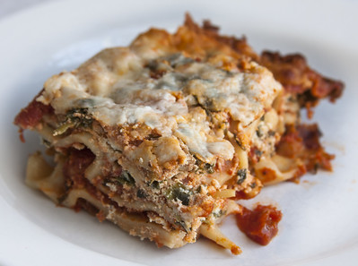

Lasagna

Description
Delicious layers of cheese, noodles, and meat in a classic Italian dish. Slow cooked sauce adds a home cooked taste to this wonderful creation.
Ingredients
- 1 pound sweet Italian Sausange
- 3/4 pound lean ground beef
- 1/2 cup minced onion
- 2 cloves garlic, crushed
- 1 (28 ounce) can crushed tomates
- 2 (6 ounce) cans tomato paste
- 2 (6.5 ounce) cans canned tomato sauce
- 1/2 cup water
- 2 tablespoons white sugar
- 1 1/2 teaspoons dried basil leaves
- 1/2 teaspoon fennel seeds
- 1 teaspoon Italian seasoning
- 1 ½ teaspoons salt, divided, or to taste
- ¼ teaspoon ground black pepper
- 4 tablespoons chopped fresh parsley
- 12 lasagna noodles
- 16 ounces ricotta cheese
- 1 egg
- 3/4 pound mozzarella cheese, sliced
- 3/4 cup grated Parmesan cheese
Steps
- Cook sausage, ground beef, onion, and garlic until browned. Stir in tomatoes, tomato paste, tomato sauce and water. Add seasoning and simmer, covered, for at least an hour, stirring occassionally.
- Boil pot of salted water to a boil and cook noodles for 8-10 minutes. Drain and rinse with cold water.
- Combine ricotta chees with egg, and 1/2 teaspoon of salt.
- Preheat oven to 375 degrees F
- Layer noodles sauce and cheese.
- Bake in over for 25 minutes. Remove foil and bake an additional 25 minutes. Cool for 15 minutes before serving.